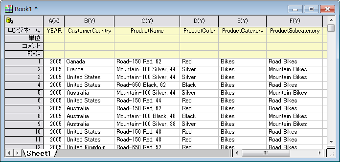
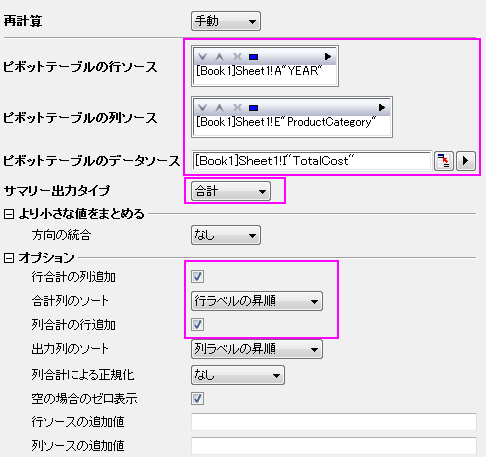

ピボットテーブル
Pivot-Table
概要
ピボットテーブルはデータ概要の把握や、分析、比較、データ間の関係確認を簡便に行えます。このツールは、ワークシートにある情報をソート、カウントしたり、合計、最小・最大・平均の計算もできます。
必要なOriginのバージョン: Origin 2015 SR0以降
学習する項目
- ピボットテーブルでデータの概要を表示する
- ピボットテーブルで出力した列や行の合計によってデータをソートする
- 列や行の小さな値をまとめる等、カスタムする
データベースからデータをインポートする
- ピボットテーブルを作成する前に、データベースからデータをインポートする必要があります。
ここでは、サーバマシンmyServer でSQLを実行している環境でAdventureWorks2008R2という名前のデータベースの設定を行ったとします。ユーザ名は「accounting」、パスワードは「mydatabase」であるとします。
- データベースに接続するには、接続文字列を使用します。
Provider=SQLOLEDB.1;Password=mydatabase;Persist Security Info=True;
User ID=accounting;Initial Catalog=AdventureWorks2008R2;Data Source=myServer
- 空白のワークシートをアクティブにし、データベースアクセスツールバーのSQLエディタを開くボタンをクリックしてSQLエディタを起動します。
- SQLエディタのファイルメニューから接続文字列を編集を選択してダイアログを開きます。テキストボックスに上記の接続文字列を入力します。入力してからテストボタンをクリックして、接続を確認します。問題なければ、OKをクリックしてデータベースにアクセスします。
- 右側のテキストボックスに以下のSQLステートメントを入力します。
SELECT
DatePart(yyyy, SOH.OrderDate) AS YEAR,
CR.Name As CustomerCountry,
Pr.Name As ProductName,
Pr.Color As ProductColor,
PC.Name As ProductCategory,
PS.Name As ProductSubcategory,
SOH.OrderDate As OrderDate,
SOD.OrderQty As OrderAmount,
SOD.LineTotal As TotalCost
FROM Person.CountryRegion AS CR
INNER JOIN Person.StateProvince AS SP
ON SP.CountryRegionCode = CR.CountryRegionCode
INNER JOIN Person.Address AS A
ON A.StateProvinceID = SP.StateProvinceID
INNER JOIN Person.BusinessEntityAddress AS BEA
ON BEA.AddressID = A.AddressID
INNER JOIN Person.Person AS P
ON P.BusinessEntityID = BEA.BusinessEntityID
INNER JOIN Sales.PersonCreditCard AS PCC
ON PCC.BusinessEntityID = P.BusinessEntityID
INNER JOIN Sales.SalesOrderheader AS SOH
ON SOH.CreditCardID = PCC.CreditCardID
INNER JOIN Sales.SalesOrderDetail AS SOD
ON SOD.SalesOrderID = SOH.SalesOrderID
INNER JOIN Production.Product AS Pr
ON Pr.ProductID = SOD.ProductID
INNER JOIN Production.ProductSubcategory AS PS
ON PS.ProductSubcategoryID = Pr.ProductSubcategoryID
INNER JOIN Production.ProductCategory AS PC
ON PC.ProductCategoryID = PS.ProductCategoryID
--WHERE SOH.OrderDate BETWEEN '1/1/2005' AND '12/31/2008'
- メインメニューのファイル：現在のワークシートに保存を選択し、これらの設定をワークシートに保存します。次にクエリー：インポートを選択して、データをワークシートにインポートします。SQLエディタを閉じます。次の画像で、インポートされたデータを確認出来ます。
- 
- 閉じるをクリックしてダイアログを閉じます。
ピボットテーブルを作成する
インポートしたデータセットは、異なる6つの国々での、3つの製品カテゴリー（Bikes,Accessories, Clothing）の年毎の全体費用をまとめたものです。異なる製品カテゴリーの年間全体コストの合計を確認するために、ピボットテーブルを作成します。次のピボットテーブルを作成するステップに従ってください。
- Sheet1をアクティブにし、メニューからデータ整形：ピボットテーブルを選択し、ダイアログを開きます。ダイアログ内で次の設定を行います。
- ピボットテーブルの行ソースでは三角形ボタン
 をクリックし、列Aを追加します。
をクリックし、列Aを追加します。
- ピボットテーブルの列ソースでは三角形ボタンをクリックし、列Eを追加します。
- サマリー出力タイプは合計を選択します。ピボットテーブルのデータソースに列Iを選択します。
- オプションブランチを開き、行合計の列追加と列合計の行追加にチェックを付けます。そして、合計列のソートドロップダウンリストから行ラベルの昇順を選びます。

- OKボタンをクリックして、ピボットテーブルを作成します。テーブルは次のようになります。
小さな値をまとめる
このセクションでは、しきい値％を超えた総計に閉める集計値(Count/Sum/Mean/Min/Max)の割合をこれらのカテゴリに表示し、デフォルトの他分類に小さな値の分類を統合する方法を示します。
- 上記の例題を踏まえて、Pivot1ワークシートの錠前アイコンをクリックし、パラメータの変更を選んで再びダイアログを開きます。
- ダイアログ内で次の設定を行います。
- より小さな値をまとめるブランチを開き、方向の統合ドロップダウンリストから、列を選びます。
- 総計の％をモードのドロップダウンリストから選択し、
- %の欄に30を入力します。列ラベルのテキストボックスに、Other Smaller Itemsと入力します。
- オプションブランチを開き、行合計の列追加と列合計の行追加にチェックを外します。
- OKボタンをクリックします。ピボットテーブルは合計によってまとめられたデータを表示します。Bikesのカテゴリーのみ、総合計の％がしきい値の30％を超えています。他の小さいカテゴリーは減少して、Other Smaller Itemsのカテゴリーに入れられます。
追加カテゴリソース
このセクションでは、Column Source Extra Valueでソースデータシートから無くなっている、いくつかのカテゴリーを表示する方法を説明します。これは、全ての必要なカテゴリーが、後で作図に使用される可能性のある結果ピボットテーブル内にあるか確認する時に便利です。
2007年より前の、異なる製品カテゴリーの全体コストの合計を確認したいとします。次のピボットテーブルを作成するステップに従ってください。
- 2007年より前の年を除外するため、データフィルタを使います。Sheet 1 に移動し、列Aを選択します。メインメニューバーにある
 ボタンをクリックします。列Aにあるフィルタアイコンを再度クリックし、より小さいを選択します。単純な数値フィルター ダイアログを次の通りに編集し、OKをクリックしてダイアログを閉じます。
ボタンをクリックします。列Aにあるフィルタアイコンを再度クリックし、より小さいを選択します。単純な数値フィルター ダイアログを次の通りに編集し、OKをクリックしてダイアログを閉じます。
- Pivot1ワークシートのカギマークをクリックし、再計算を選択します。次のピボットテーブルが示すように、他の2つの製品カテゴリは2005・2006年の費用データには記録されていませんので、Bikesのみが存在しています。
- Pivot1 のワークシートに戻り、作図：棒、円、面積：縦棒 を選択し、縦棒グラフ(Graph1)を作図します。
- 次に、ピボットテーブルに2つの無くなったカテゴリを加えます。Pivot1ワークシートのカギマークをクリックし、パラメータを変更を選択します。次のようにダイアログを編集し、OKをクリックしてダイアログを閉じます。
ピボットテーブルは次のようになります。
ピボットテーブルは次のようになります。
- Pivot1のワークシートに再度戻ります。 列Aにあるフィルタアイコンを再度クリックし、ポップアップメニューからフィルタを削除を選択してフィルタを削除します。全ての列を選択して縦棒グラフ(Graph2)を作図します。グラフでは無くなったカテゴリが表れています。
- Pivot1のワークシートに再度戻り、灰色の部分を右クリックして、グラフの追加を選択し、Graph2をPivot1ワークシートに追加します。
 | 同様に年のフィルタもデータベースから取得されます。この場合、次のスクリプトを書き換えることで、好みの時間帯に編集することが出来ます。
--WHERE SOH.OrderDate BETWEEN '1/1/2005' AND '12/31/2008'
|
分析テンプレートの作成
このセクションでは、ピボットテーブル用の分析テンプレートの作成、データベースからの再インポートと新規のデータのためにピボットテーブルを作成する分析テンプレートの再利用について説明します。
- Book1をアクティブにし、ファイル：ワークシートをテンプレートとして保存を選択し、Book1をSumTotalCost.ogwと名前を付けて保存します。
- 新規のOPJを開き、ファイル：開くからSumTotalCost.ogw を開きます。
- データソースを、データベースでAdventureWorks2008 に変更します。
- Sheet1 をアクティブにし、SQLエディタを開くボタン
 をクリックして、SQLエディタを開きます。
をクリックして、SQLエディタを開きます。
- メインメニューからファイル：接続文字列を編集を選択し、開いたダイアログに次の文字列を入力します。テストをクリックして、OKをクリックしデータベースに接続します。
Provider=SQLOLEDB.1;Password=mydatabase;Persist Security Info=True;
User ID=accounting;Initial Catalog=AdventureWorks2008;Data Source=myServer
- SQL編集のダイアログに戻り、右側のパネルで、以前のスクリプトを次のように書き直します。
--WHERE SOH.OrderDate BETWEEN '1/1/2001' AND '12/31/2004'
- メインメニューの ファイル：現在のワークシートに保存 を選択し、これらの設定をワークシートに保存します。次に クエリー：インポート を選択して、データをワークシートにインポートします。SQLエディタを閉じます。次の画像で、インポートされたデータを確認出来ます。
- ピボットテーブルを更新するために、Pivot1 のシートに移動し、黄色のカギマークをクリックして再計算を選択します。新規のデータに従って、ピボットテーブルが更新されます。
- 埋め込みグラフを更新するには、
- 埋め込みのグラフをダブルクリックし、フローティングチャートをポップアップさせます。
- グラフを選択し、再計算ボタン
 をクリックして更新します。フローティングチャートも同様に更新します。
をクリックして更新します。フローティングチャートも同様に更新します。
- フローティングチャート右上の矢印をクリックし、ワークシートにフローティングチャートを戻します。ワークシートは次のようになります。